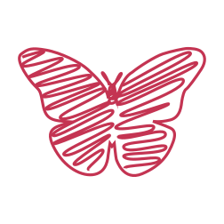

Digital Marketing & Communications
Numode Delivery · Vancouver, BC

About Me
I am a multidisciplinary designer based in Vancouver, working across graphic design, editorial, brand systems and digital experiences. I choose the medium based on what the project needs to communicate and how people will use it.
The red thread represents the way ideas develop through connections, revisions and decisions. Design rarely moves in a perfectly straight line, but the strongest concepts create continuity from one stage to the next.
I care about work that is thoughtful, useful and visually specific. Strong concepts, careful typography and consistent details matter to me because they make a project easier to understand and easier to remember.
Resume
Numode Delivery · Vancouver, BC
Graphic Design, BCIT
Poster design, editorial design, identity systems and responsive web experiences.